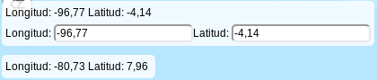

Manual
En esta sección encontrara el funcionamiento basico del geovisor y las caracteristicas basicas para hacer uso del mismo. El visor muestra capas de información social y agricola del territorio nacional. Puede escoger entre diferentes basemapas y la superposicion de capas tematicas de acuerdo a lo que desee visualizar.
Seleccion de mapa base y superposicion de capas
El icono de capas en el costado derecho despliega los mapa-base disponibles, asi como las capas tematicas disponibles con su respectivo checkbox, que permite activar y desactivar cada una de ellas.
Botones de edición
En el apartado izquierdo del geovisor encontrara una serie de botones como los que se ilustran a continuación. Este conjunto de botones corresponde a la edicion y creacion de caracteristicas dentro del visor, como lo son puntos o poligonos, ademas de otro conjunto de herramientas que permite la edicion de todas las caracteristcas agregadas por el usuario.
Imprimir y exportar mapa
Al hacer click sobre este botón sera posible imprimir y exportar el contenido del visor a diferentes formatos segun las necesidades del usuario.
Edicion de estilo
Al hacer click sobre este botón sera posible cambiar el estilo de la geometria que sea seleccionada
Según la geometria seleccionada se despliega un menu, para poligono, linea, punto.
Selector de estilo de Poligonos
Selector de estilo de lineas
Selector de estilo de puntos

Coordenadas del puntero
Esta funcionalidad permite ubicar las coordenadas segun el movimiento del puntero sobre el mapa, al momento de hacer click sobre una de los indicadores de coordenadas permite ubicar las coordenadas que el usuario desee mostrandolas con un punto, si se vuelven a cambiar las coordenadas el punto anterior desaparecera para ser remplazado por las nuevas coordenadas, se recomienda mediante la herramienta de dibujo hacer un punto en la coordenada deseada antes de introducir una nueva.
Vista Multiple
Esta vista permite la comparación entre diferentes capas pues cada visor esta conectado con los otros, se recomienda escoger diferentes capas para cada visor, si se escogen los mismos layers, se mostrará solo en uno o uno de los visores dejará de funcionar y deberá recargar el servicio. Entre las interacciones que tiene esta vista multiple es cambiar estilos de geometria y ubicar coordenadas con el puntero, este ultimo unicamente en el primer visor.